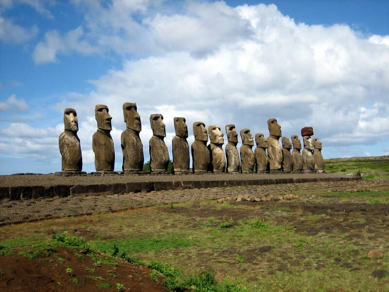

Moai of Rapa Nui
Easter Island, Chile

More than 900 stone statues of deified ancestors carved by the Rapa Nui people between 1250 and 1500, many moved miles from the Rano Raraku quarry. Ancient astronaut writers claim visitors from space built or helped build them. Rapa Nui folklore says the statues walked, and in 1982 engineer Pavel Pavel and sixteen people "walked" a concrete replica by rocking it with ropes. 1,2
Open in the interactive Watcher
Sources
- Moai Wikipedia
- Ancient astronauts Wikipedia